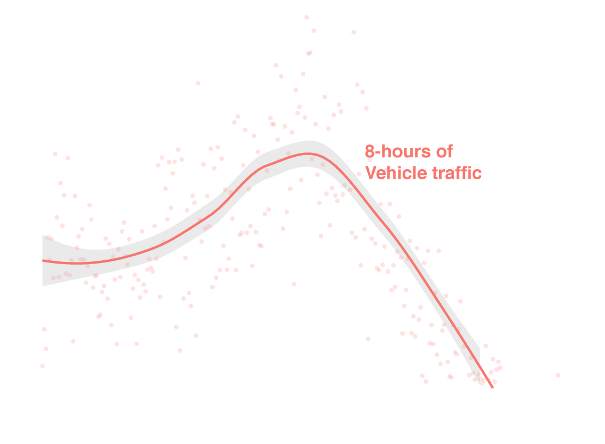
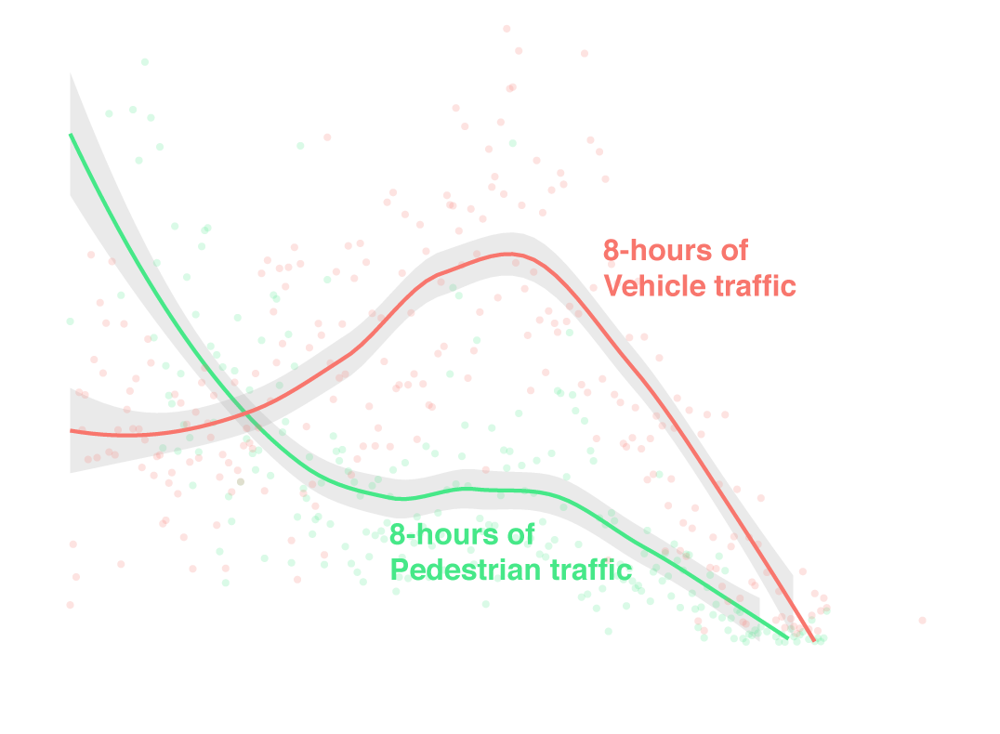
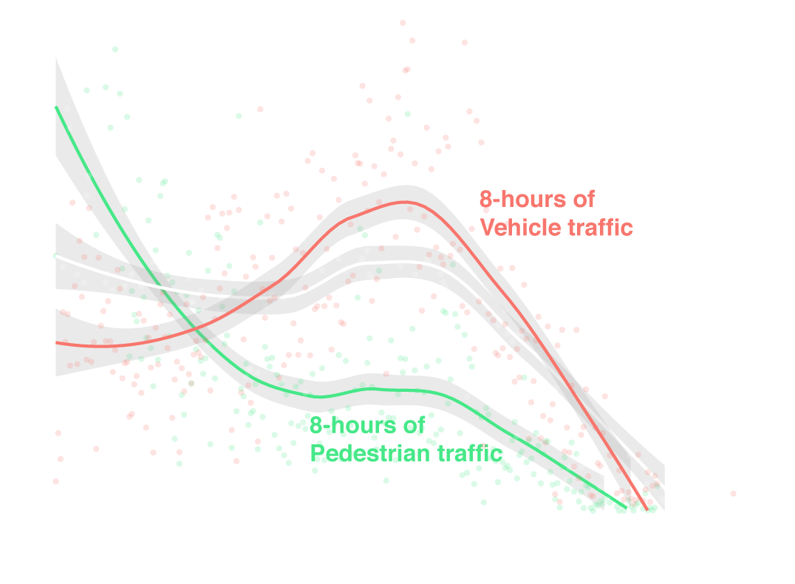

Date:
Streets:
Time:
Road Class:
<






Note: chart is truncated. Some of the 100m intervals of pedestrian traffic in the downtown core were greater than 4%. It was truncated to highlight the areas between 5 and 15km from the downtown core.
Tell your councillor
There have been 7 vulnerable road user deaths in your ward from 2007-2017. I want to know what you are doing about this growing issue in the city and specifically in your ward. Too many innocent lives have been lost. The City's Vision Zero Road Safey Plan needs to move forward.
councillor_crisanti@toronto.ca